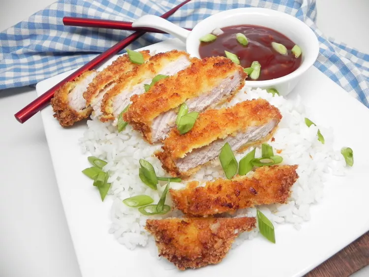

Tonkatsu

Description
This air fryer tonkatsu recipe is crispy on the outside and tender and
juicy on the inside. You can buy bottled sauce, but this homemade version
is simple to make and far better. Serve over rice if desired.
Ingredients
Tonkatsu Sauce:
- 1⁄2 cup ketchup
- 2 tablespoons soy sauce
- 1 tablespoon brown sugar
- 1 tablespoon sherry
- 2 teaspoons Worcestershire sauce
- 1 teaspoon minced garlic
Pork Chops:
- 1 pound boneless pork breakfast chops (4 chops)
- Salt and ground black pepper to taste
- 2 large eggs
- 1 1⁄2 cups panko bread crumbs
- Nonstick cooking spray
Steps
-
Make sauce: Whisk together ketchup, soy sauce, brown sugar, sherry,
Worcestershire sauce, and garlic in a medium bowl
until sugar is
dissolved. Set sauce aside.
- Preheat an air fryer to 350 degrees F (175 degrees C).
-
Prepare pork chops: Lay pork chops on a clean work surface; season with
salt and pepper.
-
Beat eggs in a flat dish. Place bread crumbs in a separate flat dish.
-
Dip a pork chop in beaten eggs, then dredge in bread crumbs. Dip again
in eggs, then press in bread crumbs to thoroughly coat.
Repeat with
remaining pork chops.
-
Place pork chops in the basket of the preheated air fryer and spray the
tops with nonstick cooking spray. Air-fry for 10 minutes.
Flip chops
over using a spatula and spray the tops with nonstick cooking spray
again. Air-fry for 10 more minutes. An instant-read
thermometer inserted
into the center of pork chops should read 145 degrees F (63 degrees C).
-
Transfer pork chops to a cutting board and slice. Serve with sauce.
Homepage